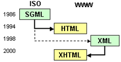

@李典
XHTML 是 The Extensible HyperText Markup Language 可扩展超文本置标语言的缩写
XML 虽然数据格式化能力强大，完全可以替代 HTML，但面对以千万计算的已有的网站，全面采用 XML 阻力过大
因此，我们在 HTML 4.01 的基础上，用 XML 的规则对 HTML 重新定义，就得到了 XHTML
用原来 HTML 的标记名作为 XML 里的标记
一个 XHTML 文档也是有效的 XML 文档
只不过长得很像 HTML~
它是结构层技术
因此你写的 XHTML 文件可能看起来很丑
建立 XHTML 的目的就是实现 HTML 向 XML 的平稳过渡
http://www.w3.org/TR/xhtml1
兼容 1.0，小幅改变
语法不兼容 XHTML 1.x 和 HTML，改动较大
W3C 比较激进的改革尝试，事实证明接受度太低。W3C 决定集中力量发展 HTML 5，今年年底工作组解散
2004 年由 WHATWG 提出，于 2007 年被 W3C接纳，并成立了新的 HTML 工作团队
HTML 5 支持传统的 HTML 语法，也支持 XML 的语法
使用 XML 语法书写时也称为 XHTML5
<tag>
<EmptyTag />，比如： <br />
<tag attribute="value">Hello</tag>
<tag> Content </tag>
虽然看起来加上XML声明是个比较好的做法，但现阶段由于一些浏览器软件的不完善，建议不要加上XML声明
主要是 IE6，加上XML 声明，浏览器会采用Quirks Mode 工作 (非正常工作模式)，造成页面显示问题
DOCTYPE 声明必须放在每一个 XHTML 文档最顶部，在所有数据和标记之上（在 XML 声明之下）
XHTML 文件的 DOCTYPE 声明是必须的！
回顾引用公共 DTD 的形式：
<!DOCTYPE 根元素 PUBLIC "DTD 名称" "外部 DTD 的URL">
要求比较宽松的 DTD，它允许你继续使用 HTML 4.01 中的标记 (但是要符合 XHTML 的写法)
专门针对框架页面设计使用的 DTD (不推荐使用)
要求严格的 DTD，不能使用任何表示信息样式的标识和属性，如居中 <center>
以Standards Mode显示，而不是 Quirks Mode
Standards Mode渲染速度要比 Quirks Mode 快
验证一个文档的结构是否符合规范
http://validator.w3.org<h1> to <h6>：标题一到标题六
<p>：段落
<br />：换行
<hr />：水平线
<br /> 这个方法已经严重被滥用来划分段落，它不应该使用在预计分段的两段文本中。是什么结构，该用什么标记就用什么标记，不是为断行而分段或者为分段而断行因为没有任何东西在换行标记之间，所以没有闭合标记，它是用“/”在br后自闭合的
<ol>
<li>The Fellowship of the Rings</li>
<li>The Two Towers</li>
<li>The Return of the King</li>
</ol>
<ul>
<li>The Fellowship of the Rings</li>
<li>The Two Towers</li>
<li>The Return of the King</li>
</ul>
用于建立术语表
用<dl>元素建立列表，表内用dt元素标记术语，用dd元素标记术语的解释，一个dt可以跟随多个dd
<dl>
<dt>Term 1</dt>
<dd>Definition 1</dd>
<dt>Term 2</dt>
<dd>Definition 2-1</dd>
<dd>Definition 2-2</dd>
</dl>
列表可嵌套
<img src="" alt="" />
注意：src属性不能少
table 元素定义标记
tr 元素定义表格中的一行
th 表头
td 元素定义数据单元格
单元格跨越 Cell Span
colspan 属性，意即“列跨越”，在列的方向上将会跨越指定数目的单元格
rowspan 属性，意即 “行跨越”
仅仅从切图的角度出发，这些文档对我们来说最有用的是psd文件
需求分析 ===> 概要设计 ===> 详细设计 ===> 编码 ===> 测试
/
#